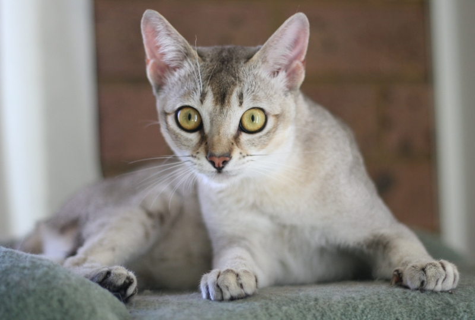

Top 1. Mèo Singapura
- Cân nặng: 2 - 4kg
- Chiều cao: 17 - 20cm
- Lông: Ngắn; màu lông là sự pha trộn giữa các màu trắng, xám, nâu
- Tuổi thọ: 11 - 15 năm
- Giá: 500 - 700 USD (10,5 - 14,7 triệu đồng)
Đứng đầu danh sách này là giống mèo Singapura, chúng có nguồn gốc từ Singapore và được xem là linh vật của Quốc đảo này. Không như nhiều giống mèo nhỏ khác là kết quả từ sự lai tạo chọn lọc của con người, Singapura là một giống mèo hoàn toàn tự nhiên. Chúng đứng thứ 22 trong danh sách 43 giống mèo được nuôi nhiều nhất trên toàn thế giới theo thống kê của Hiệp Hội Mèo Giống Quốc Tế (The Cat Fanciers' Association) năm 2014.

Singapura có đôi mắt to tròn cuốn hút, bộ lông ngắn mượt mà với các màu nâu, trắng, xám pha trộn với
nhau rất hài hòa. Tuy vóc dáng nhỏ nhắn nhưng cơ thể của giống mèo này rất săn chắc. Chúng linh
hoạt, thân thiện, thích quấn chân và tham gia vào các hoạt động của chủ. Singapura cũng rất hòa đồng
với các vật nuôi khác.
Giống mèo này rất khỏe mạnh, không có vấn đề sức khỏe gì đáng lo ngại. Do có lông ngắn nên Singapura
rất dễ chăm sóc, cũng không cần phải được tắm rửa thường xuyên. Nên đánh răng cho chúng ít nhất một
tuần một lần.
Top 2. Mèo Munchkin
- Cân nặng: 2 - 5kg
- Chiều cao: 18 - 20cm
- Lông: Ngắn, dày, lông đuôi dài hơn lông trên thân, màu lông đa dạng
- Tuổi thọ: 10 - 15 năm
- Giá: 300 - 500 USD (6,3- 10,5 triệu đồng)
Munchkin là giống mèo ngộ nghĩnh có nguồn gốc từ Mỹ. Chúng có tứ chi rất ngắn do đột biến bất thường về di truyền. Con mèo chân ngắn đầu tiên được giới thiệu vào năm 1991 và đã gây ra một cuộc tranh cãi lớn trong cộng đồng những người yêu mèo. Các ý kiến phản đối cho rằng việc nhân giống và phát triển những con mèo chân ngắn đồng nghĩa với việc tăng số lượng các biến dị có hại cho mèo và như thế là vô đạo đức. Hiện nay, nhiều hiệp hội về mèo trên thế giới vẫn không công nhận Munchkin là một giống mèo độc lập.
Khi nhìn thấy Munchkin lần đầu, có thể bạn sẽ nghĩ chúng đang nằm vì bốn chân của chúng ngắn ngủn.
Kích thước các bộ phận còn lại của giống mèo này rất bình thường, gần như bằng với các giống mèo
khác nhưng riêng đôi chân lại rất ngắn nên chúng còn được gọi là "Mèo lùn". Chiều dài cơ thể của
Munchkin gấp 2.5 lần chiều cao nên chúng có tướng đi khá vui mắt. Tuy chân ngắn nhưng Munchkin vẫn
yêu thích chạy nhảy như thường. Chúng thông minh, hoạt bát, thân thiện và rất thích ở bên chủ.
Nên chải lông cho Munchkin thường xuyên, cho chúng tắm khoảng 2 tuần/lần. Giống mèo này rất khỏe
mạnh nhưng chúng có thể gặp các vấn đề về cột sống do ảnh hưởng từ biến dị di truyền.
Top 3. Mèo Devon Rex
- Cân nặng: 2,7 - 4,1kg
- Chiều cao: 20 - 25cm
- Lông: Ngắn, dày, xoăn, màu lông đa dạng
- Tuổi thọ: 9 - 15 năm
- Giá: 500 - 600 USD (10,5 - 12,6 triệu đồng)
Devon Rex là một giống mèo xuất xứ từ nước Anh. Chúng còn có biệt danh là 'Mèo ngoài hành tinh' do ngoại hình rất độc đáo và lạ mắt. Giống mèo này có đôi tai rất lớn, mắt to, mõm ngắn nhưng xương gò má cao khiến khuôn mặt chúng nhìn hơi gầy, trông hao hao như tạo hình của những người ngoài hành tinh trong các phim của Hollywood. Devon Rex còn có một đặc trưng rất riêng biệt nữa nằm ở bộ lông và râu xoắn tít, nhìn qua có vẻ rối nhưng khi sờ lên lại rất mượt mà.
Giống mèo này rất thích hoạt động, chúng hay nghịch ngợm, tò mò, hiếu động và đặc biệt thích chui
rúc vào giường để ngủ cùng chủ. Tương tự như chó, Devon Rex có thể làm một số trò cơ bản như lăn
tròn, lạy, xoay người... nếu được huấn luyện. Chúng sẽ rất hào hứng khi được học những trò mới với
chủ của mình, đừng để giống mèo này buồn chán nếu không chúng sẽ phá phách đồ đạc trong nhà. Devon
Rex cũng rất thân thiện với trẻ em hoặc những vật nuôi khác.
Devon Rex có lông xoăn nhưng không rối lại nhanh khô nên rất dễ làm sạch. Cần thường xuyên vệ sinh
tai cho chúng để tránh nhiễm trùng. Giống mèo này ít gây dị ứng, rất phù hợp với những người nhạy
cảm với lông mèo. Chúng có thể mắc một số bệnh về tim, viêm da và nhiễm trùng tai.
Top 4. Mèo Minskin
- Cân nặng: 2 - 3kg
- Chiều cao: 17 - 20cm
- Lông: Không có hoặc có rất ít lông
- Tuổi thọ: 12 - 15 năm
- Giá: 300 - 1.000 USD (3.6 - 21 triệu đồng)
Minskin là một giống mèo mới xuất hiện trong thời gian gần đây. Vào năm 1998, một nhà tạo giống người Mỹ tên Paul McSorley bắt đầu nghiên cứu lai tạo ra một giống mèo mới bằng việc cho lai giữa các giống Sphynx, Munchkin, Devon Rex và Burmese. Đến năm 2000, Paul McSorley đã thành công và đặt tên giống mèo mới của mình là Minskin. Tính đến năm 2005, trên thế giới có tất cả 50 cá thể Minskin được công nhận, giống mèo này đang được phát triển về số lượng để được Hiệp Hội Mèo Quốc Tế (International Cat Association - TICA) công nhận là một giống mới.
Minskin thường không có lông hoặc có lông nhưng lượng lông cực ít và cực ngắn. Chúng có mắt to, mặt
nhọn; mõm và tai dài; bốn chân rất ngắn. Ngoại hình của giống mèo này thể hiện được tất cả những đặc
điểm nổi trội của các giống mèo gốc. Chúng thông minh, tình cảm, thích được vuốt ve và rất thân
thiện. Minskin có một đặc điểm rất thú vị là cực kì thích chó nên có thể phù hợp với những gia đình
thích nuôi nhiều loại thú cưng.
Vì không có lông nên Minskin rất nhạy cảm với nhiệt độ, không nên để chúng bị lạnh quá hoặc nóng
quá. Nên tắm cho chúng một tuần/lần để tránh các bệnh về da.
Top 5. Mèo Siamese
- Cân nặng: 3 - 5kg
- Chiều cao: 29 - 31cm
- Lông: Ngắn; màu xám, trắng, kem; lông ở hai tai, mặt, bốn bàn chân và đuôi có màu đen hoặc nâu sậm
- Tuổi thọ: 10 - 12 năm
- Giá: 1,5 - 2 triệu đồng
Mèo Siamese còn được người Việt Nam gọi là Mèo Xiêm, có nguồn gốc từ Thái Lan. Ban đầu giống mèo này có thân hình ngắn nhưng mập mạp, đầu tròn, khá to, về sau chúng được người Âu Mỹ yêu thích và cải tạo lại một số đặc điểm hình thể để làm mèo biểu diễn. Vì thế, mèo Siamese hiện đại có thân hình nhỏ gọn hơn với khung xương và phần đầu nhỏ. Chúng xếp thứ 9 trong tổng số 43 loài mèo đang được nuôi nhiều nhất trên thế giới.
Siamese rất nhanh nhẹn, hoạt bát, giỏi bắt chuột. Chúng rất yêu thích trẻ em, thích quấn quýt và
chơi đùa cùng chủ. Nếu bạn không thể thường xuyên ở nhà thì cũng đừng lo, giống mèo này biết cách tự
bày trò chơi một mình và ít khi phá hoại đồ đạc. Chúng không kén ăn như nhiều giống mèo cảnh khác
nên rất dễ nuôi.
Giống mèo này thường rụng rất nhiều lông nên cần được chải lông thường xuyên. Cần vệ sinh tai và mũi
của chúng để tránh bị nhiễm trùng. Siamese có thể mắc một số bệnh về tim, gan hoặc bị suyễn.